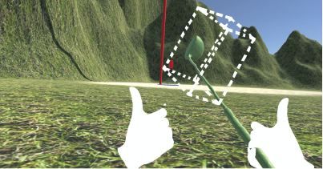

Description
Very Reasonable Virtual Reality Golf (or VRVR Golf for short) is a VR golf experience for Oculus Rift created in Unity Engine. The game provides a sandbox experience where players can play golf in an unusual environment with plenty of interactable objects.
Roles
In this project, my main role was to create the playable VR golf game framework with the help from a teammate. Once we have the golfing framework, we polish the experience further by implementing small features that will streamline the experience and improve player's immersion. I was also involved in designing the visual effect and user experience. I worked with my group members to achieve a fun and polished golf experience with emergent gameplay elements.


Process
We started with designing the concept of our experience. We decided to produce a relax and fun experience that allows the player to explore around the landscape. We landed on the idea of a golf game that allows player to teleport to where the ball landed after they hit. The teleportation towards the ball serve as a form of movement mechanic.
In the Unity Engine, we implemented our golfing framework with the help of Oculus SDK. At first, we can only rotate our head to look around. We then experiment with scripts that enable grabing, detecting keypressed and teleportation. Afterwards, we started defining our own physical limitations to Unity physics to make the experience easier. Finally, we integrate our environmental assets and interactable objects into the scene.
Problem + Reflection
One of the interesting challenge is to reduce the difficulty in golfing. The sense of distance in VR is not easy to learn, it is quite difficult to hit the ball to where you want exactly. Most of the time. The player is not able to hit the ball with their small golfing club. Therefore we experiment with the idea of enlarging the golf club collider at the moment of high-speed swing. (See Fig. 1) When the golf club head is swung at a speed greater than the threshold, we switch the physical collider on the club to one with much larger size, so that as long as the player swing in the general direction, the ball is hit with an accurate angle perpendicular to the club head.
Outcome + Reflections
While we were able to finish the playable version of the game on a tight schedule, there are still flaws and space for further amendment for VRVR Golf. To start with, more dynamic tools to hit the ball with would be a great addition to enhance the freedom and reinforce the emergent gameplay. Furthermore, I would like to improve VRVR Golf to be a more completed experience by adding different modes of gameplay such as story campaign, competitive local multiplayer or even a level editor. I am also looking forward to designing more levels with beautiful environments
In this project, I have learned the best practices for producing VR experiences that will prevent loss of immersion. For example, I am aware that the scaling and placement of objects can easily affect the player. If we place an object in front of player's face or even inside the player's avatar, the immersion is greatly reduced.
Despite the imperfections, this project is the most fun I have had throughout my program in SFU. I look forward to work in another VR project.